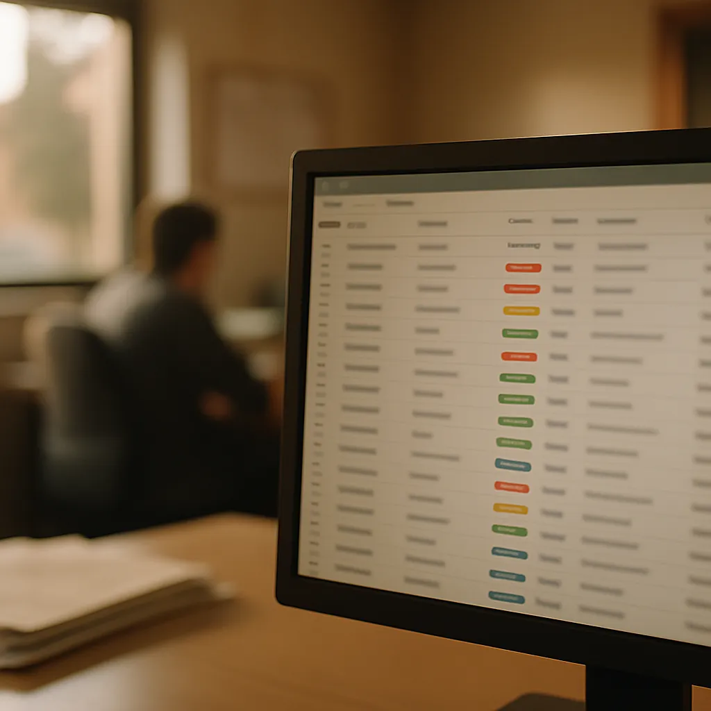

Blog · AI customer service & ticket
AI Customer Service & Ticket: meno tempo, più controllo
Ogni ticket che arriva richiede lettura, ricerca, classificazione e scrittura. Per la maggior parte dei team di supporto, queste quattro fasi consumano minuti a ogni ticket, ogni giorno, su centinaia di richieste simili. Il problema non è la difficoltà delle domande: è che nessun sistema porta automaticamente la risposta giusta davanti agli occhi di chi lavora.
Il supporto clienti brucia ore su compiti senza giudizio umano.
Ogni ticket che arriva passa attraverso una sequenza silenziosa di micro-lavori: qualcuno lo legge, capisce di cosa parla, cerca nella cronologia se è già successo, recupera la risposta giusta da qualche conversazione del mese scorso, la riscrive per adattarla al caso specifico, la manda. Quindici, venti minuti a ticket. Moltiplicato per cinquanta o cento ticket al giorno, si parla di intere giornate lavorative spese su attività ripetitive.
La maggior parte dei ticket rientra in una manciata di categorie: problemi di login, richieste di rimborso, errori su ordini, domande sulla fattura, malfunzionamenti ricorrenti. Stessa tipologia, stessa risposta di fondo, scritta ogni volta da capo perché nessun sistema la porta automaticamente davanti agli occhi dell'operatore.
Il costo di questo modo di lavorare non è solo il tempo. È anche l'errore di classificazione — un ticket urgente che finisce in coda bassa — e il sentiment negativo che cresce mentre il cliente aspetta. Un cliente che ha scritto tre volte senza risposta esauriente non aspetta: lascia una recensione, chiede il rimborso, o passa a un concorrente. Il danno si quantifica dopo, ma matura ogni giorno nel tuo backlog.
Perché un helpdesk con tag manuali non basta.
Zendesk, Freshdesk, Intercom: strumenti solidi, usati da migliaia di aziende. Permettono di aprire ticket, assegnarli, tracciare i tempi di risposta, impostare regole di routing. Alcune versioni avanzate hanno anche funzioni di suggerimento automatico. Per team piccoli con volume basso, funziona.
Il limite arriva quando il volume sale o le casistiche si moltiplicano. Le regole di automazione di questi strumenti lavorano su condizioni fisse: parola chiave nel titolo, mittente specifico, orario di arrivo. Non leggono il contenuto del ticket in modo contestuale, non sanno distinguere un tono di voce frustrato da una richiesta neutra, non preparano una bozza di risposta che cita la sezione giusta della tua knowledge base. L'operatore deve ancora fare la parte cognitiva del lavoro ogni volta.
Gran parte del carico reale di lavoro su un team di supporto sta proprio nelle fasi che questi strumenti non automatizzano — lettura contestuale, ricerca della risposta, scrittura personalizzata, escalation per sentiment. Il ticket viene aperto e tracciato, ma il lavoro vero rimane tutto sulle spalle dell'operatore.

Serve un agente AI che lavora sul contenuto, non sulle etichette.
La soluzione è un agente AI per customer service e ticket automation: un sistema che legge ogni conversazione in arrivo, capisce cosa chiede il cliente, assegna urgenza, prodotto e tipologia di problema, poi prepara una bozza di risposta personalizzata prima ancora che l'operatore apra il ticket. La differenza rispetto a un helpdesk tradizionale è questa: l'agente ragiona sul testo, non su regole fisse.
Sotto al cofano, un sistema di questo tipo si regge su tre componenti che devono lavorare insieme. Il primo è un motore di classificazione addestrato sulle categorie di problemi specifici della tua azienda — non categorie generiche. Il secondo è un sistema di retrieval sulla knowledge base esistente: articoli di supporto, conversazioni passate, documentazione tecnica. Il terzo è un modulo di analisi del sentiment che intercetta le conversazioni ad alto rischio e le fa scalare prima che diventino un problema. Questi tre pezzi, integrati con il tuo helpdesk attuale, costituiscono l'agente AI per customer service e ticket.
Costruire questa architettura richiede tempo e competenze specifiche. Bisogna mappare le categorie di ticket reali, connettere le sorgenti di knowledge base, calibrare le soglie di sentiment, testare le bozze su un campione di conversazioni storiche prima di andare in produzione. Farlo senza esperienza sul campo produce un sistema che classifica male e genera bozze inutili — peggio del punto di partenza.
Uno scenario tipico: un team di supporto SaaS B2B.
Prima dell'intervento: un team di tre persone gestisce molti ticket al giorno. Chiudere un ticket richiede tempo, tra lettura, ricerca in Notion e nelle conversazioni Zendesk passate, scrittura della risposta e revisione. Ogni lunedì mattina c'è un backlog di ticket non smistati accumulato nel weekend. Le escalation avvengono quando il cliente si rifà vivo in tono aggressivo — cioè tardi.
Con l'agente AI per customer service e ticket: il tempo medio di gestione si riduce. L'agente classifica e prepara la bozza subito dopo l'arrivo. L'operatore legge, corregge se serve, conferma l'invio. Il backlog del lunedì mattina si smaltisce più in fretta. Le conversazioni con sentiment alto vengono intercettate e segnalate prima che il cliente scriva una seconda volta. Nel tempo, la knowledge base si arricchisce con articoli generati dai ticket risolti.
Questi numeri non valgono per ogni caso. Un team con meno di 20 ticket al giorno fatica a giustificare l'investimento iniziale. Un'azienda senza una knowledge base di partenza — anche minima — deve costruirla prima, altrimenti l'agente non ha materiale su cui lavorare. Il punto di ingresso realistico è un volume continuativo di almeno 40-50 ticket al giorno e una base di risposte consolidata, anche in forma grezza.
Quando ha senso costruire un agente AI per il customer service.
| Hai questo | Conviene |
|---|---|
| Pochi ticket al giorno, team piccolo, categorie di problemi stabili e poco numerose | Un agente AI custom non ha ROI sufficiente: meglio template manuali e un helpdesk base |
| Volume medio di ticket, qualche automazione già attiva su Zendesk o Freshdesk, tempi di risposta accettabili | Valuta prima le funzioni AI native del tuo helpdesk: possono coprire parte del problema senza costo aggiuntivo significativo |
| Molti ticket al giorno, knowledge base esistente anche in forma grezza, tempo medio di gestione elevato, team di più operatori | Un agente AI per customer service e ticket ha un ritorno da valutare sul tuo volume: la riduzione del tempo di gestione si traduce in ore recuperate ogni settimana |
| Volume crescente, recensioni negative che citano tempi di risposta, escalation mancate o in ritardo, operatori che lavorano in backlog cronico | Agire prima che il problema si consolidi: ogni mese di ritardo accumula churn e danni reputazionali che costano più del progetto |
Domande frequenti su AI e customer service
L'agente AI invia le risposte in autonomia o le mostra prima all'operatore?
L'agente prepara sempre una bozza e la porta davanti all'operatore. Nessun messaggio parte senza conferma umana. Questo vale per le risposte ai ticket, per le escalation e per i nuovi articoli generati nella knowledge base. La scelta di tenere l'operatore nel loop non è una limitazione tecnica: è una scelta progettuale precisa. Un agente che risponde in autonomia su un canale di supporto clienti espone l'azienda a rischi di comunicazione che, in caso di errore, costano più del tempo risparmiato. La velocità guadagnata sta nel fatto che l'operatore non parte da zero, non nella rimozione del controllo umano.
Serve una knowledge base strutturata per iniziare, o si può partire da zero?
Una knowledge base di partenza, anche grezza, accelera sensibilmente i risultati nelle prime settimane di esercizio. L'agente AI ha bisogno di materiale su cui lavorare per generare bozze di risposta pertinenti: articoli di supporto, risposte passate a ticket simili, documentazione di prodotto. Se non esiste niente, si può costruire una base minima durante la fase di setup — recuperando le conversazioni storiche dal tuo helpdesk attuale e organizzandole per tema. La qualità delle bozze migliora in modo proporzionale alla qualità e alla quantità del materiale di partenza. Con una knowledge base già presente, anche parziale, i risultati arrivano prima e richiedono meno correzioni nei primi mesi.
Quali agevolazioni fiscali si applicano a questo tipo di progetto?
I progetti di AI customer service e ticket automation rientrano nel perimetro del credito d'imposta Transizione 4.0, che copre investimenti in sistemi di intelligenza artificiale applicati ai processi aziendali. La misura del credito varia in base alla dimensione dell'azienda e alla tipologia di spesa — software, servizi di sviluppo, integrazione. Per accedere all'agevolazione serve documentazione tecnica che attesti la natura del progetto secondo i requisiti del piano. Prima di avviare qualsiasi attività, è opportuno verificare con un consulente fiscale la situazione specifica: le finestre temporali e le aliquote cambiano con le leggi di bilancio annuali e le disponibilità del fondo.
Prossimo passo
Vuoi capire se questo vale per il tuo caso?
Apri K-BOT e in pochi minuti ti diciamo se questa categoria di soluzione fa al caso della tua PMI, oppure se basta uno strumento off-the-shelf. Gratuito.
L'offerta K2-AI sulla categoria: cosa fa, come si integra, tempi e modalità.
Descrivi il tuo caso. K-BOT dice se vale custom o se basta uno strumento standard.
Se preferisci una call diretta, scrivici. Rispondiamo in 24 ore lavorative con una lettura onesta.